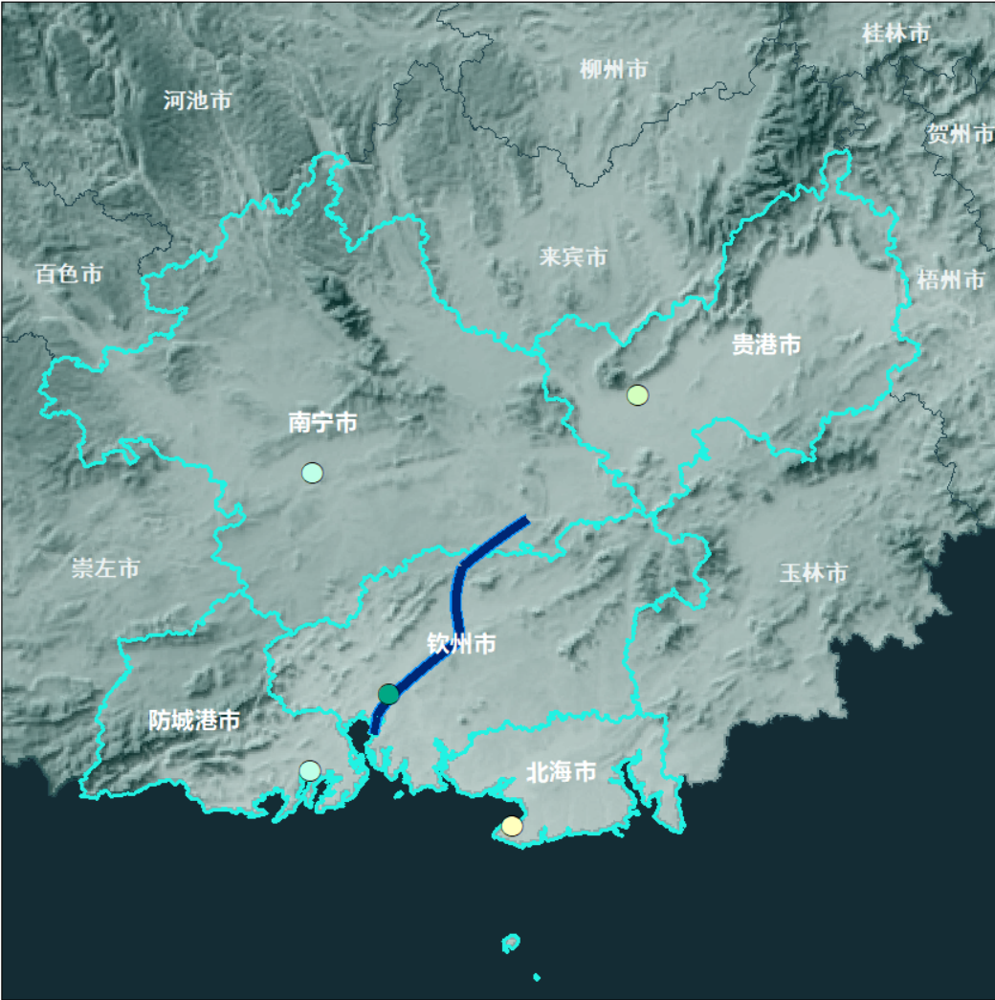

CITY 01 · 南宁
南宁市
运河起点 · 首府核心
6212.46亿元 · 2025 GDP
主导产业
数字经济科创服务现代金融新能源电池精细化工新材料茉莉花深加工
运河治理定位
源头门户、流域协同治理示范区、港产城融合先行样板；作为运河起点段，承担水质第一道防线、临港产业承载、城乡协同发展三重使命。
从西江水系横向转身，穿越岭南分水岭，再沿钦江奔赴北部湾。平陆运河以三大梯级枢纽连接江与海，也重塑广西和西南腹地的出海路径。

从孙中山先生《建国方略》里的出海口设想，到 2026 年全线建成通航，平陆运河跨越了一个多世纪。这段历程，是一部从“纸上设想”到“通江达海”的国家工程史。
平陆运河自南宁横州平塘江口起、经钦州注入北部湾，串起南宁、钦州、贵港、北海、防城港五座城市，形成“一河带五市”的经济带骨架；运河主航道则直接穿过横州市、灵山县、钦北区、钦南区四个县级单元。下图为交互科普示意，不作为工程测绘或导航依据。
运河经济带建设以国土空间治理、港产城融合、生态保护修复为主线，推动沿线城市在自治区“叶脉式”向海产业布局中各展所长、错位发展。
源头门户、流域协同治理示范区、港产城融合先行样板；作为运河起点段，承担水质第一道防线、临港产业承载、城乡协同发展三重使命。
江海联运枢纽、出海口门户、港产城融合示范；作为运河入海段，承担江海衔接、临港产业集聚、陆海通道联通功能。
西江黄金水道重要节点、运河经济带内河中转枢纽、临港产业集聚高地；依托西江干线衔接平陆运河，承担内河中转、大宗货物集散功能。
经济带外海远洋枢纽、临港产业配套高地；不直接位于运河主航道，立足错位发展，承接运河带来的西南内陆腹地货源。
西部陆海新通道重要配套枢纽、沿海沿边临港产业高地；以江海联运衔接、大宗商品中转为核心，承接运河内陆货源。
上面的五座地级市，是平陆运河带来的区域协同与发展骨架；而运河主航道真正直接穿过的，是下面四个县级单元——横州市、灵山县、钦北区、钦南区。点击县区，看看运河具体经过了哪些地方。
这里不只展示“大”，更解释工程为什么这样设计：高水头、省水、土石方综合利用、跨河桥梁与生态通道共同组成完整的运河系统。
三大梯级枢纽均采用双线 5000 吨级船闸。马道、企石通过三级省水池回收和复用水体。
第一梯级承担大幅水位衔接，形成世界级高水头内河省水船闸工程。
马道、企石省水率约 60%；青年通过双线互灌互泄节约约一半船闸运行用水。
大规模开挖后的土石方被分类用于工程利用、抬填造地、园区回填、绿色建材和土地复垦。
沿线建设涉及 104 座桥梁，其中 27 座跨越运河主航道，维持两岸交通连续性。
青年枢纽设置生态鱼道；入海口迁移保护 9572 棵大龄红树林、异地恢复 27.5 万棵，36 处生态涵养区构成完整生态网络。
大范围运用 BIM、无人机航测、无人船水下勘测、遥感监测、大体积混凝土智能温控，实现施工与生态监测全过程数字化管理。
平陆运河把西江水系与北部湾直接连通，让广西以及西南地区拥有一条更加直接的江海联运通道。
过去西江中上游部分货物经西江航运干线向东进入珠三角。平陆运河打通后，可经钦州港直接进入北部湾，形成新的江海联运路径。
按内河Ⅰ级航道建设，形成大吨位船舶江海联运能力。
超级工程背后是航道、枢纽、桥梁、生态和数字化的系统建设。
公开前期测算中，现有通道货运量转移可带来显著运输费用节约。
把西江航运体系、西部陆海新通道与北部湾港进一步连成网络。
西南货物经平陆运河出海，相比绕行广州港，内河航程缩短 560 公里以上，综合物流成本预计降低 18%—30%，构建“江—铁—海”多式联运体系。
以“通道带物流、物流带经贸、经贸带产业”，释放广西及云贵川渝内陆地区资源优势，打造港产城融合的经济廊道。
打通西南腹地直达北部湾的出海门户，深化中国—东盟产业链供应链合作，服务共建“一带一路”，提升西南地区开放能级。
“省水、护土、复绿”的系统解法——省水船闸循环用水、弃土 100% 综合利用新增近万亩耕地、36 处生态涵养区，为流域型重大工程提供经验参考。
当前原型先模拟“问题 → 内容 → 地图联动”。后续接入真实大模型时，可以把县区、工程节点和专题组件作为工具开放给 AI 调用。
点击示例问题。回答会同时触发相应县区高亮，展示“知识回答 + 地图定位”的交互方式。